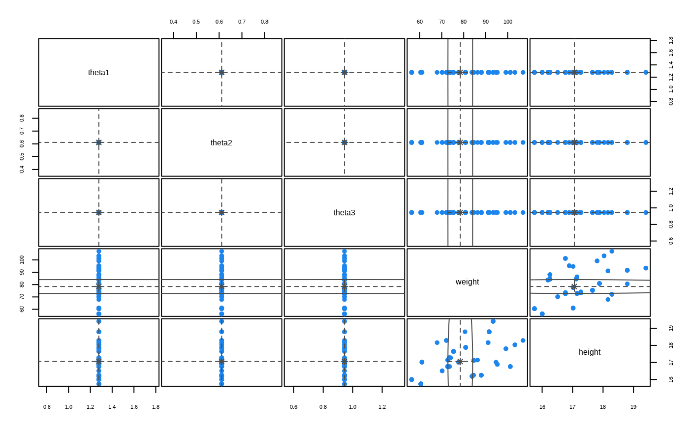
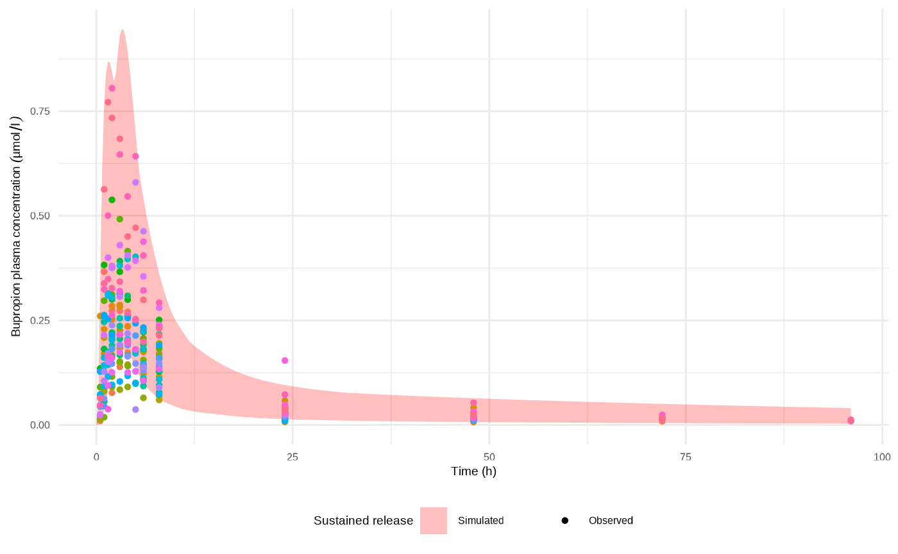
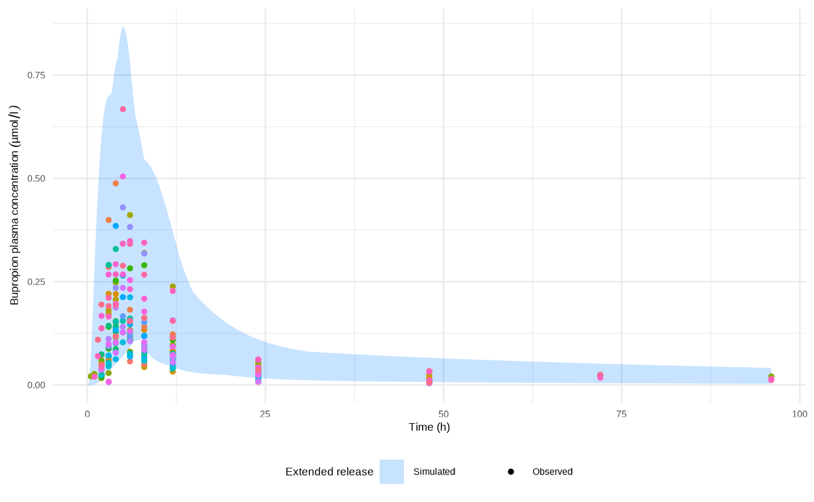
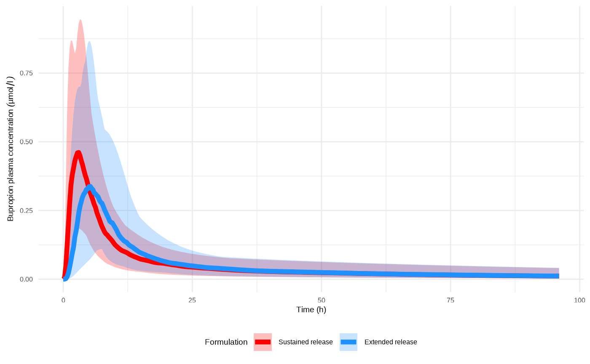
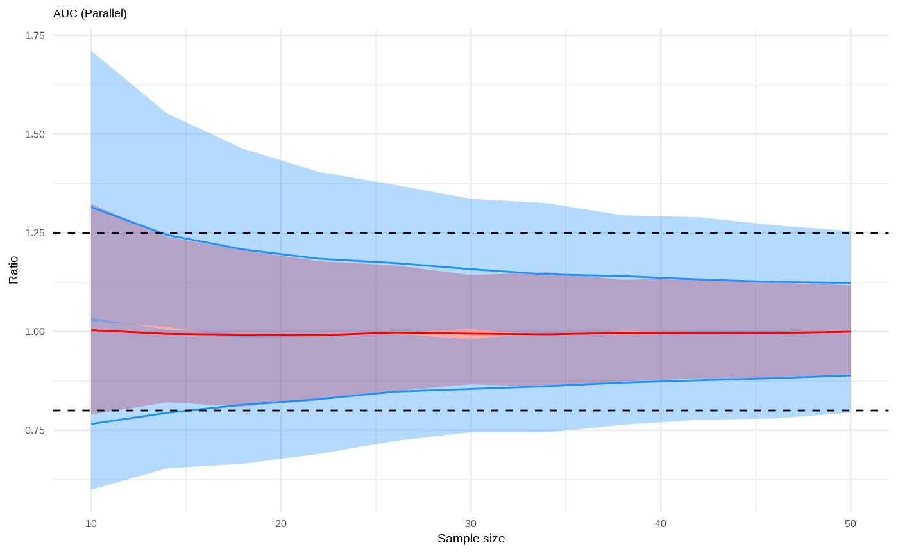
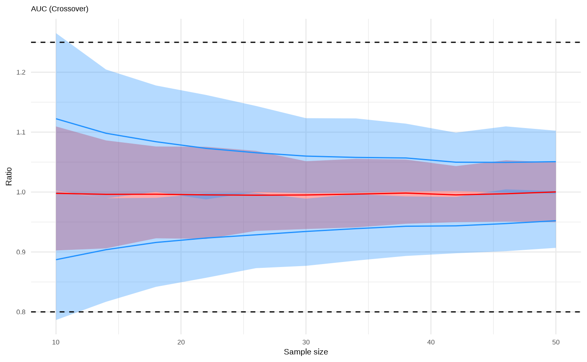
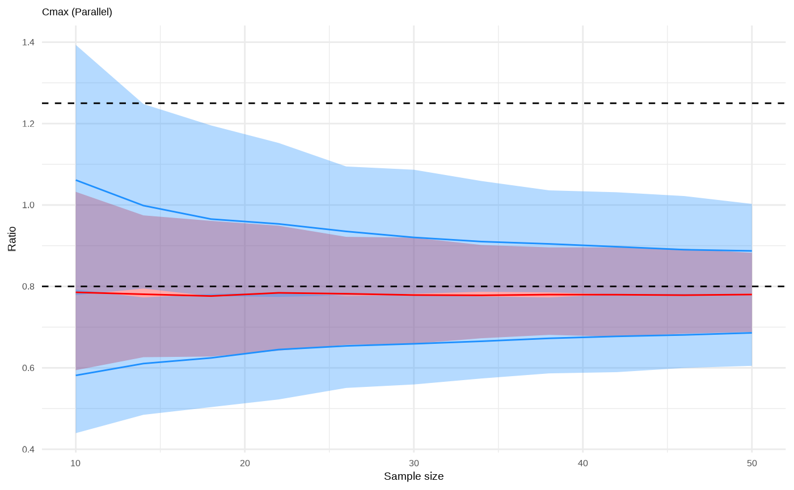
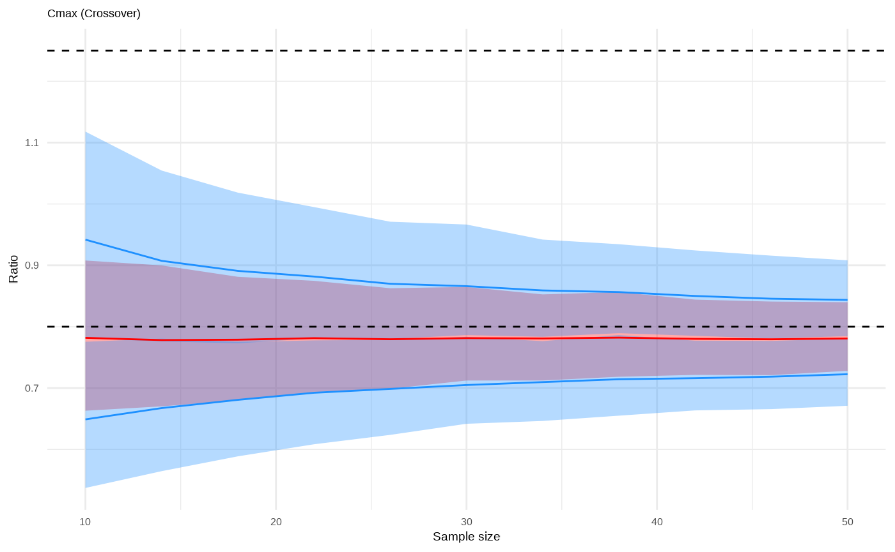
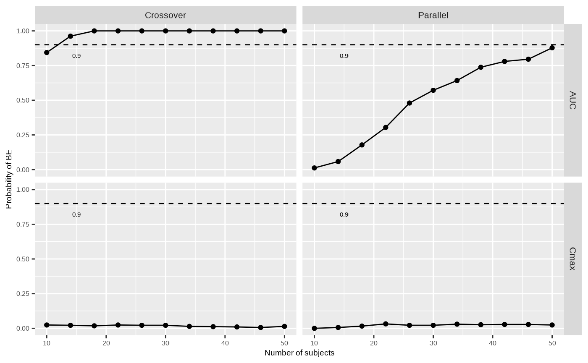

Bupropion is an antidepressant of the aminoketone class and indicated for the treatment of major depressive disorder (Fava et al. 2005). Wellbutrin® was first marketed as an immediate release (IR) product in 1980 in 75 and 100 mg tablets, 3-times daily administration (Connarn et al. 2017). In 1996, a sustained release (SR) formulation was made available for twice daily administration as 100 and 150 mg tablets, and, in 2003 an extended formulation (ER) was developed for once-daily administration as 150 and 200 mg tablets (Dhillon, Yang, and Curran 2008). This case study evaluates virtually the potential for BE of the 150 mg sustained release (SR) tablet, which, for the purposes of this case study, is considered to be the R formulation, and the 150 mg extended release (ER) tablet, considered here to be the T formulation.
In this example, data set D1 consists of bupropion plasma concentration versus time profiles reported in Connarn et al. (Connarn et al. 2017) for 30 adults who received a 150 mg dose via the SR tablet formulation (R). Data set D2 consists of the weights and heights of each individual in data set D1. The data were generated within the scope of FDA-funded contract HHSF223201310164C and fully reported by Connarn et al. (Connarn et al. 2017).
The following code gets the Data sets D1 and D2 from
pkDataFilePath = "pk_data_reference.csv" and
studyPopulationDataFilePath = "population_data.csv"
respectively.
library(ospsuite.VBEToolbox)
#> Loading required package: ospsuite
#> Loading required package: mclust
#> Package 'mclust' version 6.1.1
#> Type 'citation("mclust")' for citing this R package in publications.
#> Loading required package: shiny
#>
#> Attaching package: 'shiny'
#> The following object is masked from 'package:mclust':
#>
#> em
#> Loading required package: shinyTree
dateTime <- paste0(format(Sys.Date(), "%Y%m%d"), "_", format(Sys.time(), "%H%M%S"))
exampleName <- "bupropion-oral"
subfolder <- system.file("examples", exampleName, package="ospsuite.VBEToolbox")
# D1
pkDataFilePath <- file.path(subfolder, "pk_data_reference.csv")
# D2
studyPopulationDataFilePath <- file.path(subfolder,"population_data.csv")PBPK models for bupropion administered via the R and T formulations in this case study were developed in PK-Sim® to represent the mean individual from the clinical study population. The development and validation of the two PBPK models is detailed in Supplementary Material 2.
The models differ only in the tablet dissolution profiles for the SR and ER formulations, both of which were reported in Marok et al. (Marok et al. 2021) and are characterized by Weibull kinetics. These profiles are shown in Figure 6A. In the model, the Weibull kinetics express the time-dependent undissolved fraction of the tablet as:
Here, the parameter determines the time at which 50% of the tablet has dissolved in the in vitro dissolution test, whereas determines the shape of the dissolution curve obtained in the in the in vitro dissolution test. To allow for possible individual-specific variations in the dissolution rate, we introduce two parameters, and , that respectively scale and such that the undissolved fraction is given by:
Parameters and modify the in vitro dissolution profiles to yield a corresponding individual-specific in vivo dissolution profile. Thus, even though in vitro dissolution profile itself may change across formulations, it is assumed here that the scalings and that transform the dissolution profile from the in vitro to the in vivo context are individual-specific and independent of the formulation. With these scalings, the time at which 50% dissolution is achieved in vivo would then be , whereas the shape of the dissolution profile in vivo would be .
Parameters and therefore serve to quantify the in vitro to in vivo extrapolation (IVIVE) of the dissolution profiles. It is acknowledged here that this IVIVE is a major assumption of the model and is adopted here for the purposes of demonstrating the steps of the VBE workflow. The reader is referred to the literature on the various approaches to oral IVIVE that are outside the scope of the present work (Chilukuri, Sunkara, and Young 2007; Nguyen et al. 2017). An alternative approach to scaling the Weibull parameters, not pursued here, would be to introduce a simple individual-specific time scaling of the dissolution profile to describe the IVIVE by mapping the in vitro dissolution profile to the in vivo context. This time-scaling method has the advantage that the in vivo dissolution profile retains the overall shape of the in vitro profile.
A sensitivity analysis was performed to identify the individual-specific model parameters influencing the AUC and Cmax of the bupropion plasma concentration versus time profiles. In addition to the individual-specific IVIVE parameters and , an additional parameter, , that scales the total clearance of bupropion in the liver and intestinal walls was identified as being influential.
Figure 6B shows the support points inferred by the NPOD algorithm that approximates the joint posterior distribution of parameters and . The probability of each support point is represented by its color.
outputPath <- "Organism|PeripheralVenousBlood|Bupropion human 1st order|Plasma (Peripheral Venous Blood)"Identified individual-specific parameters that are uncertain and influential with respect to plasma concentration profiles.
Note that library(ospsuite.VBEToolbox) also loads
ospsuite package which allows to directly access the
namespace of the latter package.
ospDimensionsandospUnitslist all the dimensions and units available in the OSP Suite. These variables are exported by theospsuitepackage. Loadingospsuite.VBEToolboxthen allows to directly access them.
Theta1 <- vbeParameter(
pathInReferenceSimulation = "Applications|PO 150 mg - human|SR PO 150 mg - FDA table|Theta1",
pathInTestSimulation = "Applications|PO 150 mg - human|ER PO 150 mg - FDA table|Theta1",
displayName = "Theta1",
dimension = ospDimensions$Dimensionless,
unit = ospUnits$Dimensionless$Unitless,
lowerBound = 0.5,
upperBound = 1.5,
logIncrement = FALSE
)
Theta2 <- vbeParameter(
pathInReferenceSimulation = "Applications|PO 150 mg - human|SR PO 150 mg - FDA table|Theta2",
pathInTestSimulation = "Applications|PO 150 mg - human|ER PO 150 mg - FDA table|Theta2",
displayName = "Theta2",
dimension = ospDimensions$Dimensionless,
unit = ospUnits$Dimensionless$Unitless,
lowerBound = 0.5,
upperBound = 1.5,
logIncrement = FALSE
)
LiverIntestinalCL <- vbeParameter(
pathInReferenceSimulation = "Liver and Intestinal CL|Reference concentration",
pathInTestSimulation = "Liver and Intestinal CL|Reference concentration",
displayName = "LiverIntestinalCL",
dimension = ospDimensions$`Concentration (molar)`,
unit = ospUnits$`Concentration [molar]`$`µmol/l`,
lowerBound = 0.5,
upperBound = 1.5,
logIncrement = FALSE
)
inferenceParameters <- list(Theta1,Theta2,LiverIntestinalCL)Learns the posterior distributions of Theta1,
Theta2, and LiverIntestinalCL IIV
parameters
inferredDistribution <- runDistributionInference(
method = "NPOD",
referenceSimulationFilePath = referenceSimulationFilePath,
outputPath = outputPath,
pkDataFilePath = pkDataFilePath,
studyPopulationDataFilePath = studyPopulationDataFilePath,
cofactorPaths = NULL,
inferenceParameters = inferenceParameters,
initialGridSize = NULL,
numberOfIterations = 10,
useLogNormalLikelihood = FALSE,
saveResultsPath = paste0(exampleName,"-npod-results-",dateTime,".rds"),
cacheFolder = "cacheFolder"
)
#>
#> ── Non-Parametric Optimal Design (NPOD) ────────────────────────────────────────
#>
#> ── Optimization ──
#>
#> ℹ Run 1:
#> → theta:
#> [,1] [,2] [,3] [,4] [,5] [,6] [,7]
#> [1,] 0.8333333 1.166667 0.6111111 0.9444444 1.2777778 0.7222222 1.0555556
#> [2,] 0.8333333 1.166667 0.9444444 1.2777778 0.6111111 1.3888889 0.7222222
#> [3,] 0.8333333 1.166667 1.2777778 0.6111111 0.9444444 1.0555556 1.3888889
#> [,8] [,9] [,10] [,11] [,12] [,13] [,14]
#> [1,] 1.3888889 0.5370370 0.8703704 1.2037037 0.6481481 0.9814815 1.3148148
#> [2,] 1.0555556 1.0925926 1.4259259 0.7592593 1.2037037 0.5370370 0.8703704
#> [3,] 0.7222222 0.9814815 1.3148148 0.6481481 0.7592593 1.0925926 1.4259259
#> [,15] [,16] [,17] [,18] [,19] [,20] [,21]
#> [1,] 0.7592593 1.0925926 1.4259259 0.5740741 0.9074074 1.240741 0.6851852
#> [2,] 0.6481481 0.9814815 1.3148148 1.3518519 0.6851852 1.018519 0.7962963
#> [3,] 1.2037037 0.5370370 0.8703704 1.4629630 0.7962963 1.129630 0.9074074
#> [,22] [,23] [,24] [,25] [,26] [,27] [,28]
#> [1,] 1.018519 1.3518519 0.7962963 1.129630 1.4629630 0.5123457 0.8456790
#> [2,] 1.129630 1.4629630 0.9074074 1.240741 0.5740741 0.8456790 1.1790123
#> [3,] 1.240741 0.5740741 0.6851852 1.018519 1.3518519 1.1790123 0.5123457
#> [,29] [,30] [,31] [,32]
#> [1,] 1.1790123 0.6234568 0.9567901 1.2901235
#> [2,] 0.5123457 1.2901235 0.6234568 0.9567901
#> [3,] 0.8456790 0.9567901 1.2901235 0.6234568
#> → lambda: 0.03125, 0.03125, 0.03125, 0.03125, 0.03125, 0.03125, 0.03125, 0.03125, 0.03125, 0.03125, 0.03125, 0.03125, 0.03125, 0.03125, 0.03125, 0.03125, 0.03125, 0.03125, …, 0.03125, and 0.03125
#>
#> ── Condense - removing low probability support points
#> → theta:
#> [,1] [,2]
#> [1,] 1.2777778 0.9074074
#> [2,] 0.6111111 0.6851852
#> [3,] 0.9444444 0.7962963
#> → lambda: 0.869712829374039 and 0.130287170602792
#>
#> ── Condense - removing low probability support points
#> → theta:
#> [,1]
#> [1,] 1.2777778
#> [2,] 0.6111111
#> [3,] 0.9444444
#> → lambda: 0.999999999983306
#>
#> ── fminsearch and prune
#> ℹ Step 1/1:
#> ℹ fminsearch
#> Timing stopped at: 3.534 0.022 1.465
#> ✔ fminsearch ... done
#>
#> ℹ prune
#> ✔ prune ... done
#>
#> ℹ theta:
#> [,1]
#> [1,] 1.2777778
#> [2,] 0.6111111
#> [3,] 0.9444444
#> ℹ Run 2:
#> → theta:
#> [,1]
#> [1,] 1.2777778
#> [2,] 0.6111111
#> [3,] 0.9444444
#> → lambda: 0.999999999983306
#>
#> ── Condense - removing low probability support points
#> → theta:
#> [,1]
#> [1,] 1.2777778
#> [2,] 0.6111111
#> [3,] 0.9444444
#> → lambda: 1
#>
#> ── Condense - removing low probability support points
#> → theta:
#> [,1]
#> [1,] 1.2777778
#> [2,] 0.6111111
#> [3,] 0.9444444
#> → lambda: 1
#>
#> ── fminsearch and prune
#> ℹ Step 1/1:
#> ℹ fminsearch
#> Timing stopped at: 3.618 0.008 1.476
#> ✔ fminsearch ... done
#>
#> ℹ prune
#> ✔ prune ... done
#>
#> ℹ theta:
#> [,1]
#> [1,] 1.2777778
#> [2,] 0.6111111
#> [3,] 0.9444444
#> ℹ Run 3:
#> → theta:
#> [,1]
#> [1,] 1.2777778
#> [2,] 0.6111111
#> [3,] 0.9444444
#> → lambda: 1
#>
#> ── Condense - removing low probability support points
#> → theta:
#> [,1]
#> [1,] 1.2777778
#> [2,] 0.6111111
#> [3,] 0.9444444
#> → lambda: 1
#>
#> ── Condense - removing low probability support points
#> → theta:
#> [,1]
#> [1,] 1.2777778
#> [2,] 0.6111111
#> [3,] 0.9444444
#> → lambda: 1
#> ✔ Stopping: Absolute change in objective function is smaller than theta_F (0.1)
#> ℹ theta:
#> [,1]
#> [1,] 1.2777778
#> [2,] 0.6111111
#> [3,] 0.9444444Figure 6C shows the joint distribution between , and and the demographic descriptors of weight and height for the clinical study population. Overlayed are level sets of a two-cluster Gaussian mixture model that is fitted to the support points shown.
A virtual population of 100 individuals with weight range 50 – 110 kg and height range 160 – 200 cm was generated using PK-Sim®. This is performed via an algorithm that samples a set of anatomical and physiological parameters for each virtual individual from a probability distribution (Health Statistics Hyattsville (NHANES III) 1997) conditioned on individual weight and height. For each virtual individual, these sampled parameters were extended with a sample of parameters , and from the Gaussian mixture model in Figure 6C conditional on the individual’s weight and height.
Bupropion plasma concentration versus time profiles were simulated for the virtual population of 100 subjects following oral administration of the R (sustained release) and T (extended release) formulation, each containing a 150 mg dose of bupropion, separated by a washout period. Figure 6D shows the simulated range of plasma PK profiles following administration of the reference SR formulation in pink together with data points indicating the individualized observed values from data set D1. This plot shows that the observed range of bupropion data points is well-captured by the simulated profiles, providing an internal validation of the Gaussian mixture model. Figure 6E superimposes the plasma concentrations of the virtual population when the R and the T products were administered. Although there is a degree of overlap between the simulated plasma concentration profile ranges of the two formulations, the SR formulation shows a greater peak (Cmax) and an earlier peak time (Tmax) compared to the ER formulation.
Figure 6F shows a post-hoc external validation of the two-cluster Gaussian mixture model (Figure 6C) by comparing the simulated bupropion plasma concentration range following administration of the T product with the corresponding observations.
demographyRanges <- list(
weight = list(range = c(50, 110), units = "kg"),
height = list(range = c(16,20), units = "dm")
)
vp <- VirtualPopulation$new(inferredDistribution = inferredDistribution,
demographyRanges = demographyRanges,
numberOfVirtualIndividuals = 100,
proportionOfFemales = 50,
numberOfClusters = 1)
#>
#> ── Virtual Population ──────────────────────────────────────────────────────────
#> ℹ Create virtual population characteristics
#> ℹ Building cluster model based on NPOD results.
#> ✔ Building cluster model based on NPOD results. [86ms]
#>
#> ℹ Create virtual population characteristics⠙ Sampling from conditional distribution: individual 1/100
#> ✔ Sampling from conditional distribution: individual 100/100 [304ms]
#>
#> ℹ Create virtual population characteristics✔ Create virtual population characteristics [3.3s]
refAndTestSimulationsInVirtualPopulation <- vp$simulateVirtualPopulation(referenceSimulationFilePath = referenceSimulationFilePath,
testSimulationFilePath = testSimulationFilePath,
numberOfReplicates = 1,
outputPath = outputPath,
startTime = 0,
endTime = 5760,
resolutionPtsMin = 1/15)
#> ⠙ Simulating virtual population
#> ⠹ Simulating virtual population
#> ✔ Simulating virtual population [14.9s]


Figure 7 presents the results of the clinical trial simulation and the subsequent VBE analysis between the two bupropion formulations, conducted for trial sizes ranging for 5 to 50 subjects. The plasma concentration versus time profiles obtained in step W3 for the virtual population were input to the CTS package to predict the AUC and Cmax GMR distributions for different study population sizes under both parallel and crossover trial designs. A total of 1000 clinical trials were simulated for each trial size.
As in Figure 5, the red bands in Figure 7A-D show the distribution of the point estimate of the GMR of the PK parameter (AUC or Cmax) over the 1000 trials, while the blue bands represent the distribution of the lower and upper 90% CI of the GMR. For the AUC, the blue bands fell within the 0.80 – 1.25 range at all trial sizes under the crossover design (Figure 7A), and were within those limits for trial sizes larger than 40 subjects under the parallel design (Figure 7B). The probability of BE was near unity for the crossover design at all trial sizes and exceeded to 90% for trials of 40 subjects and over (Figure 7E). The narrow, near-unity, AUC confidence intervals under a crossover design stem from the model assumptions that 1) comparable total amounts of bupropion are released from both formulations albeit at different rates, and 2) in the crossover design, each individual is assumed to have the same bupropion clearance when receiving the two formulations. As such, the only source of variability is the difference in in vivo performance of the R versus the T product. The similar bioavailabilities of the two formulations and the identical clearance therefore result in very similar AUC values per individual for the two formulations.
In contrast, at large trial study sizes, the Cmax GMR confidence bands fell outside the 0.80-1.25 BE range for the crossover design (Figure 7C) and overlapped with the 0.80 lower limit under the parallel design (Figure 7D). This failure to demonstrate BE is to be expected considering the faster release of bupropion from the R (sustained release) product compared to the T (extended release). Consequently, as shown in Figure 7E, the probability of bioequivalence for Cmax was near zero under both trial designs.
Runs the clinical trial simulations
ctsResults <- runClinicalTrialSimulation(virtualPopulationSimulationResults = refAndTestSimulationsInVirtualPopulation,
subj_min = 10,
subj_max = 50,
subj_step = 4,
n_trials = 500,
aucICV = 0.147,
cmaxICV = 0.217)
#> ⠙ Running clinical trial simulation
#> [1] 10
#> [1] 14
#> [1] 18
#> [1] 22
#> [1] 26
#> [1] 30
#> [1] 34
#> [1] 38
#> [1] 42
#> [1] 46
#> [1] 50
#> ⠹ Running clinical trial simulation
#> ✔ Running clinical trial simulation [2m 48.8s]
#> Clinical trial simulation results as virtual bioequivalence bands
bandsPlot <- plotVBEBands(ctsResults)
#> Warning: Using `size` aesthetic for lines was deprecated in ggplot2 3.4.0.
#> ℹ Please use `linewidth` instead.
#> ℹ The deprecated feature was likely used in the ospsuite.VBEToolbox package.
#> Please report the issue at
#> <https://github.com/Open-Systems-Pharmacology/OSPSuite.VBE-Toolbox/issues>.
#> This warning is displayed once every 8 hours.
#> Call `lifecycle::last_lifecycle_warnings()` to see where this warning was
#> generated.
show(bandsPlot)
#> $auc_par_all
#>
#> $auc_cross_all
#>
#> $cmax_par_all
#>
#> $cmax_cross_all
Probability of virtual bioequivalence
probabilityPlot <- plotVBEProbability(ctsResults)
show(probabilityPlot)